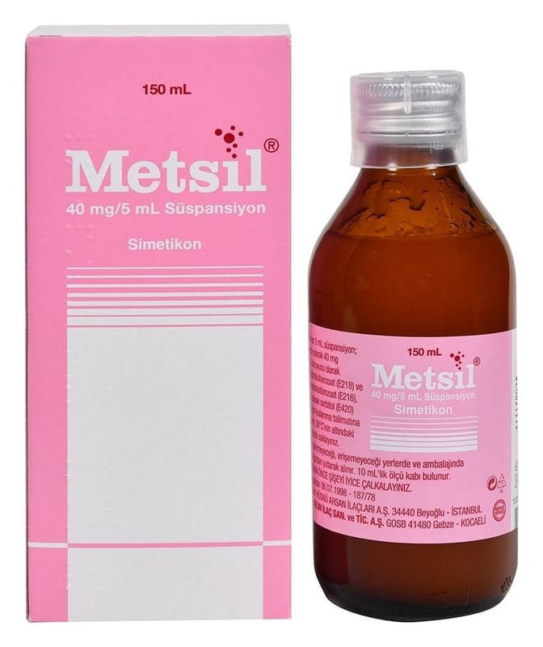

Metsil Süspansiyon 40 mg/5 ML,50 ml

Ne için kullanılır
KT · Bölüm 1METSİL’in süspansiyon formu 2.5-5 ve 10 mL işaretli ölçekle beraber 150 mL’lik koyu renkli şişededir. Görünümü pembe renkli ve akışkanlığı az katı-sıvı karışımıdır (viskoz süspansiyon). Her 5 mL’sinde 40 mg simetikon bulunur.
METSİL, bağırsağın işlevsel hastalıklarında kullanılan ilaçlar sınıfına dahil olan ve sindirim kanalında aşırı gazın yarattığı ağrıyı dindirmek için kullanılan bir gaz gidericidir.
METSİL, hava yutulması, fonksiyonel dispepsi (yapısal nedenlere bağlı olmayan hazımsızlık), ameliyat sonrasında oluşan gaz gerginliği, mide-bağırsakta ülser, irritabl kolon (rahatsızlık hissi ile beraber bağırsak alışkanlıklarında değişikliklere yol açan bir kalın bağırsak hastalığı), divertikülit (bağırsak duvarının zayıf noktalarında oluşan cepleşmelerin iltihabı nedeniyle karın ağrısıyla seyreden bir hastalık), postkolesistektomi sendromu (safra kesesi ameliyatından sonra şikayetlerin devam etmesi) ve kronik kolesistit (süregelen safra kesesi iltihabı) gibi şikayetlere bağlı olarak gaz çıkarılamamasının sorun yaratabileceği durumlarda ve karın içi röntgen çekimleri (safra kesesi, bağırsak, böbrek gibi) öncesinde mide-bağırsak kanalındaki gaz birikimlerini gidermek için kullanılır.